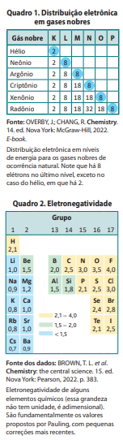
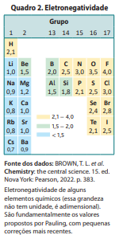
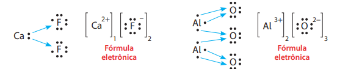
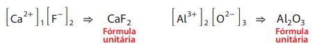
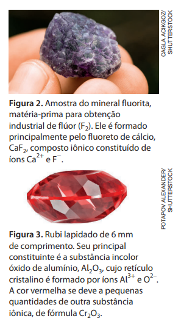
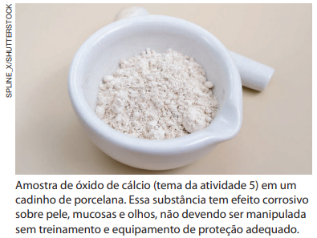
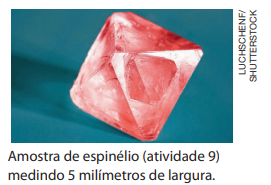

Ligações Iônicas
Uma substância muito usada pelo ser humano é o cloreto de sódio (principal componente do sal de cozinha), constituído pelos elementos químicos sódio e cloro. Consultando a tabela periódica disponível no Capítulo 3, temos:
| Átomo neutro | No de prótons | No de elétrons | Carga elétrica total |
|---|---|---|---|
| Sódio (Na) | 11 | 11 | 0 |
| Cloro (Cl) | 17 | 17 | 0 |
Existe grande diferença de eletronegatividade entre esses dois átomos; a do cloro é 3,0 e a do sódio é 0,9 (Quadro 2). O cloro atrai mais fortemente os elétrons do que o sódio e, como consequência, há transferência de um elétron do sódio para o cloro, e ambos passam a apresentar configuração eletrônica semelhante à de um gás nobre.
Quando átomos perdem ou recebem elétrons, eles deixam de ser eletricamente neutros e passam a ser íons. Um íon positivo é chamado de cátion e um íon negativo é denominado ânion. O cátion formado a partir do átomo de sódio é representado por Na+, o que indica a sua carga positiva. O ânion formado a partir do átomo de cloro é representado por Cl– , o que indica a sua carga negativa.
| Íon do elemento químico | No de prótons | No de elétrons | Carga elétrica total |
|---|---|---|---|
| Sódio (Na+) | 11 | 10 | +1 |
| Cloro (Cl–) | 17 | 18 | −1 |
Como os íons Na+ e Cl– possuem cargas de sinais opostos, atraem‑se mutuamente e mantêm‑se unidos. Essa união entre íons é chamada ligação iônica, que se deve à atração eletrostática entre cargas elétricas de sinais opostos. Cada cátion Na+ interage com os ânions Cl– que estiverem à sua volta e vice‑versa. No caso do NaCl, por exemplo, cada cátion e ânion interage mais fortemente com outros seis íons à sua volta, que estão mais próximos e têm carga de sinal oposto à sua, formando retículos cristalinos iônicos (Fig. 1). Essas estruturas constituem os sólidos iônicos.
Quanto maior a diferença de eletronegatividade entre átomos que interagem, maior a possibilidade de formarem íons. De modo geral, quando essa diferença é maior que 1,7, considerando dados da escala de Pauling, a ligação química tende a ser predominantemente iônica. No caso do NaCl, a diferença é de 2,1 (ou seja, 3,0 – 0,9).
A fórmula unitária de um composto iônico representa a proporção em números inteiros (os menores possíveis) dos cátions e ânions que constituem o retículo cristalino. Ela pode ser obtida por meio da fórmula eletrônica (ou fórmula de Lewis), na qual os símbolos dos elementos químicos dos respectivos átomos são indicados com os elétrons da sua camada de valência (nessa obra, eles serão representados simbolicamente por pequenos círculos), como mostrado a seguir.
O cloreto de sódio, composto de fórmula unitária NaCl, é um exemplo de composto iônico, ou seja, constituído de íons. Cada cristal de cloreto de sódio é formado por um retículo cristalino iônico, no qual há imensa quantidade de cátions Na+ e ânions Cl–.
De modo geral, uma ligação tem caráter predominantemente iônico quando se estabelece entre elementos químicos cuja diferença de eletronegatividade é acentuada, o que, na escala de Pauling, corresponde a uma diferença superior a 1,7. Embora haja exceções a esse critério, ele é útil para estabelecer previsões.

Gases nobres e regra do octeto
Todas as substâncias químicas são constituídas de átomos, e em praticamente todos os casos há combinação entre eles. São conhecidas apenas seis substâncias nas quais os átomos não estão unidos a outros – hélio, neônio, argônio, criptônio, xenônio e radônio – que são encontradas em baixíssima concentração na atmosfera terrestre. Esses gases são constituídos de átomos (não combinados) de elementos químicos do grupo 18 da tabela periódica, os gases nobres. O sétimo elemento desse grupo, oganessônio, Z= 118, não tem existência natural; apenas alguns átomos foram produzidos artificialmente.
Até hoje, não foi encontrada na natureza nenhuma substância em que átomos de gases nobres estejam combinados entre si ou com átomos de outros elementos. Já foram produzidas, em laboratório, algumas substâncias artificiais em que determinados gases nobres (especialmente o xenônio e o criptônio) se combinaram com átomos de outros elementos, embora essa combinação, em geral, exija condições experimentais drásticas, alcançáveis somente de forma artificial. Tais observações evidenciam que os átomos de gases nobres têm baixíssima tendência a se combinar com outros átomos.
Como as propriedades químicas dos elementos estão relacionadas com as distribuições eletrônicas nas camadas da eletrosfera, os cientistas propuseram que a estabilidade dos gases nobres poderia estar relacionada ao número de elétrons que os átomos desses elementos apresentam na camada eletrônica mais externa, também denominada camada de valência. O Quadro 1 mostra a distribuição eletrônica em níveis de energia (camadas) dos gases nobres.
Em 1916, o físico alemão Walther Kossel (1888‑1956), baseando‑se nas contribuições de outros cientistas, propôs haver relação entre ligação química e elétrons na última camada. O químico alemão Richard Wilhelm Heinrich Abegg (1869‑1910) foi o primeiro a registrar em trabalho impresso que os átomos poderiam passar por alterações a fim de adquirir oito elétrons na camada de valência. Mais tarde, a ideia foi retomada de forma independente pelos químicos estadunidenses Gilbert Newton Lewis (1875‑1946) e Irving Langmuir (1881‑1957); este último chamou essa relação de “octeto”. Hoje, ela é conhecida como regra do octeto e, de acordo com ela, os átomos das substâncias se combinam por meio das ligações químicas, de forma a adquirir a configuração eletrônica semelhante à de um gás nobre no estado fundamental. A regra do octeto é uma ferramenta útil para obter a fórmula química de alguns compostos, no entanto ela apresenta muitas exceções e não explica por que os átomos adquirem estabilidade ao se ligarem

Revisitando a Eletronegatividade
Ao dar continuidade aos estudos sobre a maneira como os átomos se ligam, o químico estadunidense Linus Pauling (1901 ‑1994) propôs, em 1931, a primeira escala quantitativa de uma propriedade chamada eletronegatividade. Entre as várias escalas de eletronegatividade já propostas, vamos considerar a de Pauling.
Para entender o conceito de eletronegatividade, é preciso considerar que a atração do núcleo sobre os elétrons de um átomo é de origem eletrostática. Assim como o núcleo de um átomo atrai os elétrons desse átomo, em uma ligação química ele também pode atrair os elétrons de outros átomos a ele ligados. Essa tendência de atração de elétrons está relacionada à eletronegatividade, grandeza que indica a intensidade com que um átomo ligado a outro atrai os elétrons envolvidos em uma ligação química.
A eletronegatividade depende de fatores como o número de prótons, pois, quanto maior esse número, mais elevada é a atração que o núcleo exerce sobre os elétrons. Ela também é influenciada pela distância dos elétrons em relação ao núcleo, já que elétrons das camadas mais próximas ao núcleo são atraídos mais fortemente que os elétrons das camadas mais externas. Observe, no Quadro 2, alguns valores de eletronegatividade.

Dialogando com o texto
Consulte a tabela periódica e procure nela os elementos químicos cujos símbolos são Li, K, Mg, Ca, Ba, Al, N, O, S, Br e I.
Qual é o gás nobre cujo número de elétrons é mais próximo do de cada um deles?
Quantos elétrons cada um desses elementos deve perder ou receber para obter a configuração de valência de um gás nobre? Se julgar necessário, para embasar sua decisão, consulte a distribuição eletrônica em camadas, no item 6 do Capítulo 3.
Caso os átomos desses elementos químicos estabeleçam ligações iônicas, qual é a carga dos íons formados após a perda ou o recebimento de elétrons?
Apresente as conclusões para o professor e debata com ele cada caso.
Veja agora a fórmula eletrônica de outros dois compostos iônicos, sendo um deles formado por cálcio e flúor, e o outro, por alumínio e oxigênio (Figs. 2 e 3):

Para prever a fórmula de um composto iônico, em vez de pensar em transferência de elétrons entre átomos neutros, é conveniente raciocinar em termos da carga do íon formado pelos elementos e considerar que, em um composto iônico, a carga elétrica total positiva deve ser neutralizada pela negativa, resultando em carga total nula. Na fórmula unitária, o cátion deve ser escrito à esquerda e o ânion, à direita
Assim, nos dois casos anteriores, determinamos inicialmente a carga dos íons. Se necessário, consultamos a tabela periódica ou as distribuições eletrônicas no item 6 do Capítulo 3. A seguir, determinamos os índices considerando que a proporção entre cátions e ânions no retículo cristalino deve conduzir à carga total nula.

Existem diversos íons presentes em substâncias iônicas cuja carga não é prevista pela regra do octeto. Como alguns exemplos desses íons, podemos citar: Ag+ , Zn2+ , Cu2+ , Fe2+ , Fe3+ , Mn2+ , Cr3+ , Sn2+ e Pb2+ .

Dialogando com o texto
Dialogando com o texto Caso haja possibilidade, acesse os modelos digitais tridimensionais de retículos cristalinos iônicos dos endereços sugeridos a seguir. Neles, a proporção entre cátions e ânions é aquela expressa na fórmula unitária do composto (1 : 1 no NaCl e 1 : 2 no CaCl2).
• Modelo de um cristal de cloreto de sódio (NaCl). Disponível em:
• Modelo de um cristal de fluoreto de cálcio (CaF2). Disponível em:
2.html. Acessos em: 15 out. 2024.
Nas outras sugestões de modelos a seguir, a posição central de cada íon é indicada:
• Posição dos íons em um cristal de NaCl. Disponível em:
• Posição dos íons em um cristal de CaF2. Disponível em:
Exercícios
1. Sobre uma proposta científica desenvolvida a partir de 1916, consta em um livro universitário:
Algo único nas configurações eletrônicas dos átomos de gases nobres é responsável pela sua baixa reatividade química, e átomos dos demais elementos combinam‑se uns aos outros atingindo configurações eletrônicas como as dos gases nobres.
Fonte: PETRUCCI, R. H. et al. General Chemistry: principles and modern applications. (Tradução dos autores.) 11. ed. Toronto: Pearson, 2017. p. 412.
- a. Na época, as eletrosferas de certos elementos químicos foram consideradas modelos de estabilidade. A que grupo da tabela periódica eles pertencem?
- b. As ligações químicas interatômicas são as interações que mantêm os átomos unidos, formando as substâncias. O estabelecimento dessas ligações envolve qual parte da eletrosfera? Como tal região é denominada?
- c. Qual é a regra elaborada na época citada? Como ela é empregada para prever se um átomo tem a eletrosfera estável ou não? O que diz essa regra e como ela possibilita fazer a previsão?
2. Um átomo eletricamente neutro do elemento químico bromo (Br) pode ficar com eletrosfera similar à de um gás nobre se receber:
- a. um elétron.
- b. dois elétrons.
- c. três elétrons.
- d. quatro elétrons.
3. Um átomo eletricamente neutro do elemento químico magnésio (Mg) pode ficar com eletrosfera similar à de um gás nobre se perder:
- a. um elétron.
- b. dois elétrons.
- c. três elétrons.
- d. quatro elétrons.
4. Um átomo eletricamente neutro do elemento químico lítio (Li) pode ficar com eletrosfera similar à de um gás nobre se:
- a. perder um elétron.
- b. perder dois elétrons.
- c. receber um elétron.
- d. receber dois elétrons.

5. A cal viva, usada em construção civil e na agricultura, é representada pela fórmula unitária CaO.
- a. Em que grupos da tabela periódica estão os elementos que a constituem?
- b. Deduza a carga dos íons presentes, comparando os elementos que formam a cal viva com os gases nobres dos quais eles mais se aproximam.
6. A tabela periódica é um importante instrumento de consulta. Utilizando‑a, determine as cargas dos íons dos elementos químicos representados a seguir. Em seguida, preveja, para cada par de elementos apresentado, a fórmula unitária do composto formado.
- a. K e Br
- b. Ca e Cl
- c. Na e S
- d. Mg e O
7. Denomina‑se valência de um íon o valor de sua carga, desconsiderando o sinal. Assim, por exemplo, a valência do Na+ é 1 e a do O2– é 2. Além disso:
• íon monovalente é o que tem valência 1;
• íon bivalente é o que tem valência 2;
• íon trivalente é o que tem valência 3.
Fundamentado nessas informações, classifique, quanto à valência, os íons das atividades 5 e 6.
8. Considere o composto iônico de fórmula QR, no qual os cátions de Q e os ânions de R obedecem à regra do octeto. Responda e justifique.
- a. Q pode ser alcalino e R halogênio?
- b. Q pode ser alcalino e R calcogênio?
- c. Q pode ser alcalinoterroso e R halogênio?
- d. Q pode ser alcalinoterroso e R calcogênio?
9. O espinélio é uma gema (pedra preciosa) que apresenta, em sua composição, dois tipos de cátion e um de ânion. Sua fórmula é MgAl 2Ox . Considerando os elementos e a neutralidade elétrica do composto, deduza o valor de x.

10. (Udesc) Um composto é formado pelo cátion X e ânion Y, com fórmula química representada por X2Y3. A respeito desse composto, indique a alternativa correta.
- a. O átomo X possui 2 elétrons na camada de valência.
- b. O átomo Y possui 6 elétrons na camada de valência.
- c. O átomo Y possui 2 elétrons na camada de valência.
- d. O átomo X possui 6 elétrons na camada de valência.
- e. O composto se estabiliza por ligação química cova‑ lente.